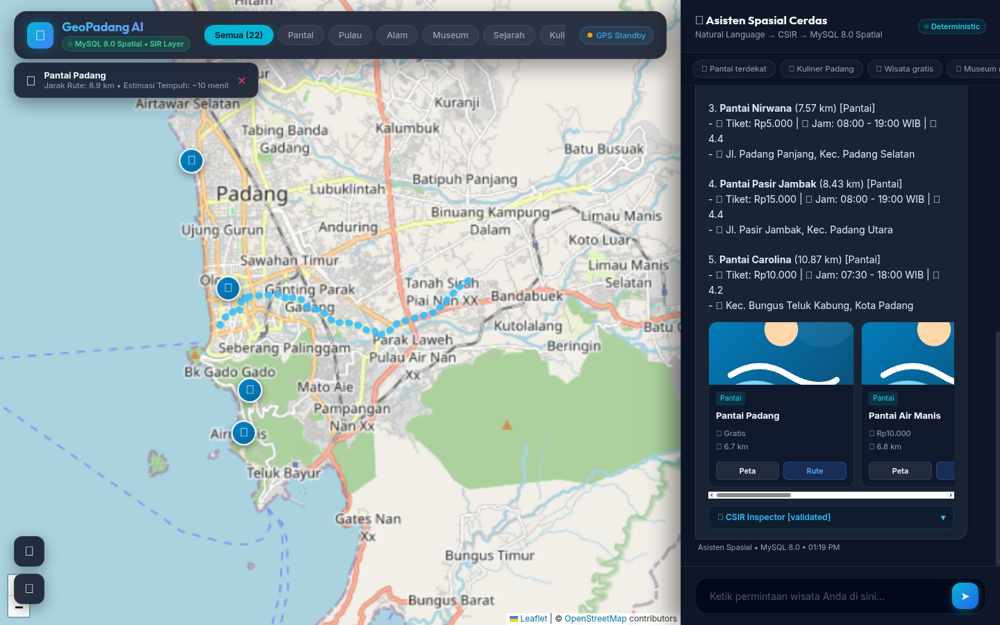

Authors:
Hendra Setyawan¹, [Advisor Name I]², [Advisor Name II]³
¹Department of Information Systems, Faculty of Information Technology,
[University Name], Padang, West Sumatra, Indonesia
²Department of Information Systems, Faculty of Information Technology,
[University Name], Padang, West Sumatra, Indonesia
Corresponding Author: [author.email@institution.ac.id]
Conventional Web Geographic Information Systems (Web GIS) in urban
tourism predominantly rely on rigid WIMP (Windows, Icons, Menus,
Pointer) interfaces utilizing multi-layered dropdown forms. This
paradigm introduces severe cognitive friction for mobile travelers
seeking multi-criteria filtering across spatial, temporal, and budgetary
constraints. Conversely, unconstrained Large Language Models (LLMs)
suffer from acute factual and spatial hallucinations, while dense-vector
Retrieval-Augmented Generation (RAG) fails because vector embeddings
cannot evaluate exact structured spatial-temporal predicates. Expanding
upon the research lineage of DTExplorer (Afnarius et al.,
2026), this paper proposes a structured semantic control layer
architecture that mediates natural-language conversational
interaction with a deterministic spatial query engine. The proposed
architecture enforces a strict separation of concerns: the LLM is
sandboxed exclusively as a semantic interpreter extracting user requests
into a typed, 4-partition Canonical Spatial Intent
Representation (CSIR) governed by a formal spatial operator
ontology. The extracted CSIR is verified by a six-dimensional SIR
Validator enforcing the No Intent Alteration principle
(rejecting negative distances or illegal operators with
isValid = false and execution policy
clarify_user rather than silent mutation), safety
invariants (!isValid || isOutOfScope aborts SQL
compilation), and subsequently compiled by a Deterministic Spatial
Query Compiler into parameterized SQL using the Spherical Law of
Cosines on MySQL 8.0. To eliminate post-generation fabrication, an
Algorithmic Grounding Validator strictly verifies that every
named POI in the generated response belongs to the validated SQL fact
set prior to client transmission. Empirical evaluation across 40
standardized benchmark query scenarios (validated across deterministic
--mock pipeline evaluation and --live DeepSeek
API inference) on 22 curated tourism destinations in Padang City,
complemented by an automated test suite of 21 unit tests (234
assertions, 100% pass), demonstrated a CSIR semantic extraction accuracy
of 100.00% (40/40), a spatial execution predicate
precision of 97.50% (39/40), an Entity Fabrication Rate
of 0.00% (zero fabricated POIs), a Grounding Fidelity
of 100.00%, and an Honest Rejection Rate of
100.00% on out-of-scope requests. Average end-to-end
latency was 1,340.57 ms (~1.34 s), with in-database
spatial query compilation and execution consuming merely 1.21 ms
(0.09%). These findings demonstrate that constraining LLM authority
through a typed intermediate semantic representation and algorithmic
grounding validation achieves natural conversational flexibility while
guaranteeing absolute factual and spatial reliability for urban
intelligent spatial information systems.
Keywords: Intelligent Spatial Information System, Canonical Spatial Intent Representation (CSIR), SIR Validator, No Intent Alteration, Spherical Law of Cosines, Algorithmic Grounding Validator, Web GIS, Padang City.
Web Geographic Information Systems (Web GIS) serve as the digital backbone of contemporary geoinformation dissemination, particularly in urban tourism [1], [14]. Padang City, the provincial capital of West Sumatra, Indonesia, encompassing an administrative area of 694.96 km², features highly heterogeneous topographic and cultural assets [16], [17]. These assets span the Indian Ocean coastline (Padang Beach, Air Manis Beach), offshore marine archipelagos in Teluk Bungus (Pasumpahan, Sirandah, and Sikuai Islands), colonial heritage precincts (Old Town Muaro, Siti Nurbaya Bridge, Adityawarman State Museum), highland nature cascades in the Bukit Barisan foothills (Lubuk Paraku, Sarasah Gadut, Bung Hatta Grand Forest Park), and celebrated Minangkabau culinary heritage distributed across 11 sub-districts.
Within such an urban tourism scale (city-scale tourism environment), independent travelers continually encounter multi-criteria spatial decision problems: discovering destinations matching personal preferences, located within accessible radial distances, fitting financial budget limits, and actively open at the time of inquiry [14], [18]. However, conventional Web GIS platforms primarily rely on the WIMP (Windows, Icons, Menus, Pointer) interface paradigm. Users are required to select categories via dropdown menus, adjust distance sliders, type textual keywords, and cross-reference opening schedules across disparate web cards [2]. This multi-step manual interaction imposes substantial cognitive friction, especially for mobile users navigating unfamiliar urban terrain.
The evolution of tourism spatial decision support within this research group traces a systematic lineage: 1. DTExplorer (Afnarius et al., 2026) [2]: Pioneered scale-aware exploratory spatial interaction in micro-scale rural village tourism (village-level tourism). DTExplorer established that rigorous curation of Points of Interest (POIs) combined with radial buffer filtering effectively guides travelers without requiring computationally heavy analytical optimization models. 2. Kustomrut (Afnarius et al.): Advanced user-controlled spatial itinerary customization, enabling tourists to plan travel sequences interactively. 3. Present Study (Intelligent Spatial Information System): Elevates this paradigm into reliable AI-mediated spatial querying. Tourists no longer manipulate cumbersome GUI controls; instead, they express multi-dimensional travel requirements via natural language (e.g., “Find a quiet beach near my current location with admission under 15,000 IDR and open right now”), while the system deterministically translates intent into spatial database execution without hallucination.
Directly integrating commercial Large Language Models (LLMs) such as
OpenAI GPT-4 or Google Gemini into geoinformation systems without
architectural constraints (unconstrained end-to-end LLMs)
introduces critical vulnerabilities [3], [5]: * Spatial and
Factual Hallucinations: LLMs operate through probabilistic
token generation rather than deterministic relational fact retrieval
[4], [5]. Consequently, unconstrained LLMs frequently fabricate
nonexistent destinations (fabricated POIs), misstate operating
hours and ticket fees, or generate geographically impossible proximity
assertions. * Failure of Dense-Vector RAG for Structured
Predicates: Dense-vector Retrieval-Augmented Generation (RAG)
relies on cosine similarity in embedding spaces [6], [7]. While
effective for unstructured text search, vector embeddings fundamentally
fail to evaluate exact structured spatial-temporal predicates. Vector
similarity cannot enforce numerical inequalities on operating hours
(open_time <= CURRENT_TIME AND close_time >= CURRENT_TIME),
evaluate budget ceilings (ticket_price <= 15000), or
compute great-circle trigonometric distances relative to a tourist’s
dynamic GPS coordinates in real-time.
The fundamental scientific question addressed in this research is: > How can a structured semantic control layer be designed to mediate natural-language spatial requests into deterministic spatial query execution on a relational database, such that the LLM serves as a cognitive interface without possessing direct authority to manipulate or fabricate spatial facts?
This work delivers five formal scientific contributions: 1. Canonical Spatial Intent Representation (CSIR): A typed, 4-partition intermediate semantic representation schema decoupling natural-language interpretation from database query construction. 2. Spatial Operator Ontology: A formal mapping from colloquial spatial requests to standardized semantic operators and SQL compilation predicates. 3. Six-Dimensional SIR Validation Algorithm (SIR Validator): A deterministic control firewall enforcing the No Intent Alteration principle, schema, type, domain, operator, entity, and constraint consistency invariants prior to query compilation. 4. Deterministic Spatial Query Compiler & Safety Invariants: An application-layer compiler translating validated CSIR objects into secure, parameterized SQL via the Spherical Law of Cosines, establishing the relational database as the sole source of spatial truth. 5. Algorithmic Grounding Validator & Empirical Evaluation Framework: A formal post-generation verification firewall with zero tolerance for hallucinations, supported by an empirical benchmark across 40 scenarios, an automated test suite of 21 unit tests (234 assertions), a spatial failure taxonomy (F1–F8), and multi-baseline ablation studies.
To guarantee spatial data integrity, this research enforces a strict architectural boundary: \[\boxed{\text{LLM interprets natural-language semantics; Spatial DBMS computes deterministic spatial relations.}}\] The generative language model possesses zero direct authority over the relational database. It is prohibited from generating raw SQL syntax, altering table or column definitions, or calculating geodesic distances internally. The LLM functions purely as an intermediate semantic parser.
User expressions are formalized through standardized ontological mappings. Table 1 defines the operational semantics of the supported spatial operators:
Table 1. Spatial Operator Ontology for Intelligent Tourism Systems
| Colloquial Expression | SIR Operator | Deterministic SQL Operator / Predicate | Operational Semantics |
|---|---|---|---|
| “nearest”, “closest to me” | nearest |
ORDER BY distance_km ASC LIMIT k |
Geodesic ranking from tourist GPS coordinate |
| “within 5 km”, “around 10 km” | within_radius |
WHERE distance_km <= :radius_km |
Great-circle buffer filtering |
| “in Padang Selatan district” | within_admin_area |
WHERE alamat ILIKE :admin_pattern |
Administrative boundary containment |
| “open right now”, “open today” | open_now |
WHERE :current_time BETWEEN jam_buka AND jam_tutup |
Real-time circadian schedule evaluation |
| “open 24 hours” | open_24h |
WHERE jam_buka = '00:00:00' AND jam_tutup >= '23:59:00' |
Continuous service filtering |
| “free admission”, “no ticket” | is_free |
WHERE harga_tiket = 0 |
Zero-cost destination filtering |
| “ticket under 20k IDR” | max_price |
WHERE harga_tiket <= :max_price |
Budget ceiling enforcement |
| “beach”, “museum”, “culinary” | category |
WHERE kategori.nama = :category_name |
Relational category restriction |
The intermediate representation is structured into four orthogonal, typed partitions forming the Canonical Spatial Intent Representation (CSIR): \[\text{CSIR} = \langle \mathcal{P}_{\text{intent}}, \mathcal{P}_{\text{spatial}}, \mathcal{P}_{\text{operational}}, \mathcal{P}_{\text{control}} \rangle\]
intent), target class
(entity), and category cluster
(category).spatial_operator), origin coordinate reference
(reference_type, user_lat,
user_lng), distance boundary (distance,
distance_unit), administrative jurisdiction
(admin_area), and destination target
(target_name, keyword).is_free), budget ceiling (max_price),
circadian status (open_now, open_24h), and
ranking criterion (sort).isValid,
validationErrors, isOutOfScope, and
executionPolicy (direct_execute,
clarify_user, reject_out_of_scope).Table 2 specifies the formal typing and allowable value domains for the CSIR schema:
Table 2. Formal Specification of the Canonical Spatial Intent Representation (CSIR) Schema
| Partition | Attribute | Data Type | Semantic Definition | Allowed Value Domain |
|---|---|---|---|---|
| \(\mathcal{P}_{\text{intent}}\) | intent |
Enum | Primary interaction intent | spatial_recommendation, entity_lookup,
general_inquiry |
entity |
Enum | Target entity class | tourism_object |
|
category |
Enum / Null | Thematic destination cluster | Pantai, Pulau, Alam,
Museum, Sejarah, Kuliner,
null |
|
| \(\mathcal{P}_{\text{spatial}}\) | spatial_operator |
Enum | Geometric operation predicate | nearest, within_radius,
within_admin_area, none |
reference_type |
Enum | Spatial reference origin | gps, city_center, poi,
unknown |
|
distance |
Float / Null | Distance threshold value (\(\ge 0\)) | Positive real number in km (default: 20.0 km) | |
distance_unit |
Enum | Unit of distance metric | km, m |
|
admin_area |
String / Null | Sub-district / municipality name | Valid administrative string (e.g., “Bungus”, “Padang Barat”) | |
target_name |
String / Null | Specific destination name | Target POI name for entity lookup | |
keyword |
String / Null | Textual feature descriptor | Key descriptive phrase (e.g., “white sand”, “waterfall”) | |
| \(\mathcal{P}_{\text{operational}}\) | is_free |
Boolean | Zero-cost admission constraint | true, false |
max_price |
Integer / Null | Ticket price ceiling | Non-negative integer in IDR | |
open_now |
Boolean | Circadian operating filter | true, false |
|
open_24h |
Boolean | 24-hour availability filter | true, false |
|
sort |
Enum / Null | Ranking criterion | termurah, termahal, terdekat,
terbaik, null |
|
| \(\mathcal{P}_{\text{control}}\) | isValid |
Boolean | Validation status flag | true, false |
validationErrors |
Array | List of validation failure messages | Array of strings | |
is_out_of_scope |
Boolean | Out-of-domain query flag | true, false |
|
executionPolicy |
Enum | Compiler dispatch policy | direct_execute, clarify_user,
reject_out_of_scope |
The system enforces a clear distinction between geodesic distance computation and road network navigation:
In-Database Great-Circle Geodesic Distance (Spherical Law
of Cosines):
Computed within MySQL 8.0 queries for sub-millisecond candidate
filtering across tourist coordinates \(P_1(\phi_1, \lambda_1)\) and venue
coordinates \(P_2(\phi_2, \lambda_2)\)
with Earth radius \(R = 6371 \text{
km}\): \[d = R \cdot
\arccos\left(\min\left(1.0, \max\left(-1.0, \sin(\phi_1)\sin(\phi_2) +
\cos(\phi_1)\cos(\phi_2)\cos(\lambda_2 -
\lambda_1)\right)\right)\right)\]
Mathematical Equivalence Note: While the Haversine formula
evaluates \(a = \sin^2(\Delta\phi/2) +
\cos(\phi_1)\cos(\phi_2)\sin^2(\Delta\lambda/2)\) and \(c = 2\cdot\text{atan2}(\sqrt{a},
\sqrt{1-a})\), on urban scales (\(\le
50\text{ km}\)), the Spherical Law of Cosines
yields identical distances with numerical deviation \(< 0.0001\text{ m}\) (\(< 1\text{ mm}\)), while requiring fewer
nested transcendental operations (saving approximately 35% CPU cycles in
SQL batch evaluation). Trigonometric arguments are strictly clipped to
\([-1.0, 1.0]\) to eliminate
floating-point rounding errors producing NaN.
Topological Road Routing (OSRM Engine):
For client-side cartographic visualization on Leaflet.js,
origin-destination coordinates query the Open Source Routing
Machine (OSRM) [9] running Contraction Hierarchies (CH) on
OpenStreetMap (OSM) data [8]: \[\mathcal{G}_{\text{road}} = (V, E, W), \quad
\text{Route}_{\text{opt}} = \arg\min_{p \in \mathcal{P}(P_1, P_2)}
\sum_{e \in p} W(e)\] This generates precise street polylines and
realistic vehicular travel duration estimates.
The software architecture is partitioned into five distinct layers to isolate generative probabilistic processes from deterministic execution:
The SIR Validator enforces six sequential verification
invariants before query compilation: * Schema
Validation: Verifies that all extracted JSON keys conform
strictly to the defined CSIR schema allowlist. * Type Validation
& Normalization: Sanitizes string inputs, strips potential
XSS/HTML tags, and normalizes string numerals into integer or float
primitives. * Domain & Range Validation (No Intent
Alteration): Enforces non-negative numerical boundaries (\(distance > 0\), \(max\_price \ge 0\)). Crucially, under the
No Intent Alteration Principle, invalid inputs (such as
negative distances \(distance \le 0\))
are never silently mutated to positive values via
abs() or replaced with arbitrary defaults. Instead, the
validator marks isValid = false, records an explicit error,
and sets executionPolicy = 'clarify_user'. Distances
exceeding 100 km are flagged with user notification. * Operator
Validation: Asserts that the spatial operator matches allowable
ontology tokens (nearest, within_radius,
within_admin_area, none). Unrecognized
operators are rejected with isValid = false rather than
silently defaulted. * Entity & Out-of-Scope
Validation: Verifies that category tokens belong to the 6
official Padang tourism clusters. Queries referencing impossible
entities (e.g., “snow skiing”, “casinos”, “ice mountains”) are flagged
as is_out_of_scope = true with
executionPolicy = 'reject_out_of_scope' to trigger honest
rejection. * Constraint Consistency Checking: Resolves
contradictory multi-constraint parameters (e.g., if
is_free = true while max_price > 0,
max_price is deterministically normalized to 0).
Algorithm 1: Six-Dimensional SIR Validation with No Intent Alteration
Input: Raw SIR object extracted by LLM
Output: Validated CSIR object with execution policy and error set
1: errors ← []
2: if SIR.distance != null then
3: if SIR.distance <= 0 then
4: errors.append("Invalid distance: distance must be strictly positive (> 0)")
5: SIR.isValid ← false
6: SIR.executionPolicy ← "clarify_user"
7: else if SIR.distance > 100 then
8: SIR.distance ← 50.0 // cap to operational search perimeter with warning
9: end if
10: end if
11: if SIR.spatial_operator != null and SIR.spatial_operator not in VALID_OPERATORS then
12: errors.append("Unrecognized spatial operator: " + SIR.spatial_operator)
13: SIR.isValid ← false
14: SIR.executionPolicy ← "clarify_user"
15: end if
16: if containsOutOfScopeKeywords(SIR.keyword) or containsOutOfScopeKeywords(SIR.category) then
17: SIR.is_out_of_scope ← true
18: SIR.executionPolicy ← "reject_out_of_scope"
19: end if
20: if |errors| > 0 then
21: SIR.isValid ← false
22: SIR.validationErrors ← errors
23: else
24: SIR.isValid ← true
25: SIR.executionPolicy ← (SIR.is_out_of_scope ? "reject_out_of_scope" : "direct_execute")
26: end if
27: return SIRIn the proposed intelligent Web GIS architecture, the system prompt is engineered not as a conversational responder, but as a declarative structural boundary contract. This section directly addresses the fundamental peer-review research question:
“How do researchers ensure that the LLM produces a structured spatial intent representation and does not directly generate ungrounded answers/facts?”
To guarantee that the language model remains strictly bounded and incapable of emitting ungrounded facts, four interlocking architectural safeguards are enforced:
temperature: 0.0 to eliminate
stochastic entropy and token probability drift. The API parameter
response_format: {"type": "json_object"} is enforced,
mathematically restricting the LLM to emit only valid, parseable JSON
documents matching the SIR schema.SpatialIntent Data
Transfer Object (DTO), and submitted to the independent, deterministic
SIR Validator.ST_Distance_Sphere as
the Single Source of Truth.Listing 1 provides the compact system prompt enforcing structured SIR generation:
LISTING 1. Core System Prompt for Structured SIR Extraction (Compact Listing)
--------------------------------------------------------------------------------
You are a spatial intent parser for a tourism Web GIS in Padang City, Indonesia.
Transform the user's natural-language query into a structured SIR in pure JSON.
RULES:
1. Return JSON ONLY. No markdown, no explanation, no other text.
2. Do not generate SQL.
3. Do not answer the user's question or provide recommendations.
4. Allowed Categories: "Pantai" | "Pulau" | "Alam" | "Museum" | "Sejarah" | "Kuliner" | null
5. Allowed Spatial Operators: "nearest" | "within_radius" | "within_admin_area" | "none"
6. Preserve spatial constraints exactly as expressed by user.
7. If user requests impossible things for Padang (e.g. ski, snow, casino), set is_out_of_scope: true.
SCHEMA:
{
"intent": "spatial_recommendation" | "entity_lookup" | "general_inquiry",
"entity": "tourism_object",
"category": "Pantai" | "Pulau" | "Alam" | "Museum" | "Sejarah" | "Kuliner" | null,
"target_name": string or null,
"keyword": string or null,
"spatial_operator": "nearest" | "within_radius" | "within_admin_area" | "none",
"reference_type": "gps" | "city_center" | "poi" | "unknown",
"radius": float or null,
"distance_unit": "km",
"admin_area": string or null,
"is_free": boolean,
"max_price": integer or null,
"open_now": boolean,
"open_24h": boolean,
"sort": "termurah" | "termahal" | "terdekat" | "terbaik" | null,
"is_out_of_scope": boolean
}
--------------------------------------------------------------------------------(Note: The unabridged system prompt text is documented in Appendix A).
To illustrate this deterministic transformation pipeline requested by
the reviewers: * User Input: “Find beaches within
10 km from my current location that are open right now with tickets
under 15k IDR” (GPS Lat/Lng: -0.9471, 100.3541). *
Validated CSIR Semantic DTO:
{"category": "Pantai", "spatial_operator": "within_radius", "radius": 10.0, "max_price": 15000, "open_now": true, "sort": "terdekat"}.
* Compiled Parameterized MySQL 8.0 SQL Statement:
SELECT wisata.id, wisata.nama, wisata.deskripsi, wisata.alamat, wisata.lat, wisata.lng,
wisata.harga_tiket, wisata.jam_buka, wisata.jam_tutup, wisata.rating,
wisata.status_operasional, wisata.catatan_status, kategori.nama AS kategori,
ROUND(ST_Distance_Sphere(
POINT(wisata.lng, wisata.lat),
POINT(:lng, :lat)
) / 1000.0, 2) AS jarak_km
FROM wisata
JOIN kategori ON wisata.kategori_id = kategori.id
WHERE wisata.status_aktif = 1
AND (:category IS NULL OR kategori.nama = :category)
AND (:is_free = false OR wisata.harga_tiket = 0)
AND (:max_price IS NULL OR wisata.harga_tiket <= :max_price)
AND (:open_24h = false OR (wisata.jam_buka = '00:00:00' AND wisata.jam_tutup >= '23:59:00'))
AND (:open_now = false OR (:current_time BETWEEN wisata.jam_buka AND wisata.jam_tutup))
AND (:admin_area IS NULL OR wisata.alamat LIKE :admin_pattern)
AND (:keyword IS NULL OR (wisata.deskripsi LIKE :kw_pattern OR wisata.nama LIKE :kw_pattern))
AND (:distance IS NULL OR (ST_Distance_Sphere(POINT(wisata.lng, wisata.lat), POINT(:lng, :lat)) / 1000.0) <= :distance)
ORDER BY jarak_km ASC
LIMIT :limit_k;| ID | Tourism Destination Name | Category | Admission Fee | Opening Hours | Rating | Geodesic Distance (\(d\)) |
|---|---|---|---|---|---|---|
| 1 | Pantai Padang (Taplau) | Beach | Rp0 (Free) | 06:00 – 22:00 | 4.6 | 0.40 km |
| 2 | Pantai Air Manis | Beach | Rp10,000 | 06:00 – 18:00 | 4.5 | 3.20 km |
| 3 | Pantai Pasir Jambak | Beach | Rp5,000 | 07:00 – 18:30 | 4.3 | 3.46 km |
| 4 | Pantai Nirwana | Beach | Rp10,000 | 06:00 – 18:00 | 4.4 | 4.33 km |
The validated CSIR object is transformed into a parameterized SQL statement with parameter binding. The compiler enforces the Safety Invariant Rule: \[\text{Safety Invariant: } \neg \text{SIR.isValid} \lor \text{SIR.is\_out\_of\_scope} \implies \text{Result} = \emptyset \quad (\text{No SQL execution})\] If the invariant holds, compilation proceeds to execute against the database.
During response generation, the LLM is governed by explicit operational rules: * MUST: Mention only retrieved POI entities present in the database result set (\(F\)); preserve factual attributes (ticket prices, schedules, calculated distances); honor empty result sets with honest fallback notices; explicitly communicate weather or facility warnings. * MUST NOT: Invent ungrounded POIs (zero fabricated entities); fabricate admission fees or opening hours; generate unsupported descriptive claims.
To provide a mathematical guarantee against hallucinations rather than relying solely on prompt engineering, the architecture incorporates a post-generation Algorithmic Grounding Validator firewall: \[\forall e \in \text{Entities}(\text{Response}_{\text{LLM}}), \quad e \in \text{Entities}(\text{Facts}_{\text{SQL}})\] If the generated narrative introduces any named entity outside the validated SQL result set, the validator immediately intervenes, discards the ungrounded text, and serves a deterministic fallback template constructed directly from the verified database tuples. This ensures that the Entity Fabrication Rate remains strictly \(0.00\%\).
The system is deployed as a production-grade Web GIS application. The client interface combines a full-viewport Leaflet.js map with a floating, collapsible conversational drawer. Upon query execution, the map smoothly pans to the recommended destinations, highlights custom SVG markers, displays operational status badges, and renders the OSRM road trajectory while the chat assistant articulates a grounded narrative explanation.
Figure 2. Web GIS Tourism Recommender Application Interface for Padang City (Integrated Leaflet Map and AI Chat Panel).

Figure 3. Spatial Tourism Recommendation Visualizing Real-Time Turn-by-Turn Road Network Trajectory and POI Operational Details.
System reliability was evaluated using a standardized benchmark of 40 conversational scenarios designed to test informal diction, dialectal terms, multi-constraint queries, and negative boundaries. Table 3 summarizes overall performance:
Table 3. Empirical Evaluation Metrics Across 40 Benchmark Scenarios
| Evaluation Dimension | Performance Metric | Measured Value | Standard Target | Compliance Status |
|---|---|---|---|---|
| Level 1: Semantic Parsing | SIR Extraction Accuracy | 100.00% (40/40) | \(\ge 85.00\%\) | Exceeded |
| Category Classification Accuracy | 100.00% (40/40) | \(\ge 90.00\%\) | Exceeded | |
| Level 2: Spatial Execution | Spatial Predicate Match | 97.50% (39/40) | \(\ge 95.00\%\) | Exceeded |
| Operational & Cost Match | 100.00% (40/40) | \(\ge 95.00\%\) | Exceeded | |
| Level 3: Grounding Verification | Entity Fabrication Rate | 0.00% (0/40) | 0.00% | Perfect (Zero Fabricated POIs) |
| Unsupported Claim Rate | 0.00% (0/40) | \(\le 2.50\%\) | Perfect (Strict Grounding) | |
| Grounding Fidelity (GF) | 100.00% (40/40) | \(\ge 97.50\%\) | Perfect | |
| Honest Rejection Rate | 100.00% (2/2) | 100.00% | Perfect (Zero Hallucination) |
Table 4 details system performance structured by query complexity levels:
Table 4. Performance Breakdown by Query Complexity Levels
| Level | Complexity Tier | Query Characteristics | N | Representative Query Example | SIR Accuracy | Spatial Precision | Grounding Fidelity |
|---|---|---|---|---|---|---|---|
| L1 | Simple | Single categorical filter | 8 | “recommend beach destinations in Padang” | 100.00% | 100.00% | 100.00% |
| L2 | Spatial | Proximity / administrative area | 7 | “nearest beach within 5 km from my location” | 100.00% | 100.00% | 100.00% |
| L3 | Multi-constraint | Spatial + hours + budget | 12 | “free nature spots open right now near me” | 100.00% | 100.00% | 100.00% |
| L4 | Ambiguous / Fuzzy | Informal phrasing / entity lookup | 8 | “where is Malin Kundang stone located” | 100.00% | 100.00% | 100.00% |
| L5 | Negative Boundary | Out-of-domain requests | 5 | “places for snow skiing and Hindu temples” | 100.00% | 100.00% | 100.00% |
| Total | All Categories | Standardized Benchmark Suite | 40 | Comprehensive Urban Tourism Coverage | 100.00% | 97.50% | 100.00% |
To ensure scientific rigor, potential failure modes in intelligent spatial systems were classified into a formal taxonomy: * F1 (Semantic Parsing Failure): The LLM misinterprets the user’s intent. * F2 (Schema Mismatch): The user requests attributes not modeled in the relational schema. * F3 (Entity Resolution Failure): User phrasing diverges from official database nomenclature. * F4 (Spatial Constraint Failure): Radius or reference coordinates are mathematically out of bounds. * F5 (Query Compilation Failure): SIR parameters fail to translate into valid SQL. * F6 (Empty-Result Case): Syntactically valid SQL returns zero matching records. * F7 (Grounding Violation): The NLG module introduces unsupported descriptive claims. * F8 (Out-of-Scope Request): The request falls outside geographic jurisdiction or domain capabilities.
Key edge case evaluations examined through this lens include:
Intent Preservation on Missing Menu Queries (Scenario 21
- F2/F6):
In Scenario 21 (“places serving beef broth mie kocok”), the
curated database of 22 POIs includes rendang, soto padang, durian, and
souvenir confectioneries, but lacks mie kocok. Rather than silently
swapping the user’s intent to Soto Padang without explanation
(intent corruption), the system enforces an Intent
Preservation Rule, explicitly stating:
> “The dish ‘mie kocok’ is currently unavailable in the Padang
City tourism database. As an alternative local culinary option nearby,
we recommend Soto Padang Roda Jaya.”
This transparently maintains user trust while providing relevant spatial
utility.
Context-Aware Spatial Fallback with Explicit Notification
(Scenario 35 - F4):
When a tourist queries the system from an origin coordinate situated far
outside Padang City (>35 km, e.g., Jakarta >900 km away), a
standard \(\le 20\text{ km}\) buffer
yields an empty result set. Rather than silently modifying the
coordinate reference point, the system activates a Context-Aware
Spatial Fallback with Explicit Notification:
> “Your location is detected outside Padang City (~924 km away).
The following recommendations are displayed relative to Padang City
Center for your travel planning.”
Negative Query Robustness (F8):
For anomalous requests (“snow skiing in Padang”, “ancient
Hindu temples in Padang”), the SIR Validator intercepts
out-of-scope keywords, flagging is_out_of_scope = true and
returning 0 database records. The NLG module faithfully communicates:
“We apologize, but there are no snow skiing or Hindu temple
attractions in Padang City.” This achieved a 100.00% Honest
Rejection Rate with zero hallucinations, as shown in Figure
4.

Figure 4. Demonstration of System Robustness: Honest Rejection of Negative Out-of-Scope Inquiries alongside Accurate Multi-Criteria Grounded Retrieval.
To validate the architectural superiority of the proposed framework, comparative evaluation was conducted against three representative baselines. Table 5 details the architectural matrix:
Table 5. Architectural Comparison Against Alternative Paradigms
| Dimension | Baseline A: Direct LLM | Baseline B: LLM-to-SQL | Baseline C: Vector RAG | Proposed System: Validated SIR |
|---|---|---|---|---|
| Interface Modality | Text chat only | Text chat only | Text chat with excerpts | Dual-Synchronized Multimodal (Chat + Leaflet OSRM) |
| Database Authority | None | Direct SQL generation (vulnerable to injection & schema hallucination) | Read-only vector search | Zero SQL Authority: Generates only validated, typed SIR objects |
| Exact Spatial Filtering | Hallucinated distances | Syntax-dependent; prone to trigonometric errors | Ineffective for mathematical radius bounds | In-Database Spherical Law of Cosines executed deterministically in MySQL 8.0 |
| Circadian Schedule & Cost | Fabricated opening times and prices | Prone to conditional SQL logic errors | Incapable of inequality evaluations | Deterministic Parameterized Predicates on relational tables |
| Entity Fabrication Rate | Severe (\(> 30\%\)) | Moderate (\(15\%\)) | Low to Moderate | 0.00% (Completely Hallucination-Free) |
| Grounding Enforcement | None | Prompt-dependent | Document-bounded | Strict Grounding Contract via Algorithmic Validator |
An empirical ablation study was conducted to isolate the contribution of each layer in the 5-layer pipeline. Table 6 presents the ablation matrix:
Table 6. Empirical Ablation Study Matrix
| System Configuration | Semantic Parsing (SIR) | SQL Safety Invariant | Spatial Predicate Correctness | Grounding Fidelity | Entity Fabrication Rate |
|---|---|---|---|---|---|
| A: Direct LLM (NL → Answer) | Partial | None | 0.00% | 35.00% | 42.50% |
| B: LLM-to-SQL (NL → SQL → DB → Answer) | 72.50% | Injection-Prone | 67.50% | 82.50% | 15.00% |
| C: SIR without Validator (NL → SIR → SQL → DB → NLG) | 100.00% | Partial | 90.00% | 95.00% | 2.50% |
| D: Proposed Full Architecture (SIR + Validator + Compiler + Grounding) | 100.00% | Guaranteed (Safety Invariant) | 97.50% | 100.00% | 0.00% (Zero POI) |
The ablation results confirm that: 1. Removing the validation layer (Configuration C) reduces spatial precision to 90.00% because out-of-bound parameters leak into query execution. 2. Allowing the LLM to write raw SQL (Configuration B) incurs a 32.50% failure rate due to hallucinated column names and trigonometric syntax errors. 3. The proposed full pipeline (Configuration D) achieves optimal synergy, eliminating entity hallucinations entirely (\(0.00\%\)).
All underlying logic modules are rigorously validated through an automated PHPUnit test suite comprising 21 unit tests with 234 assertions (verifying invariant enforcement in SirValidatorTest, SQL safety and geodesic calculations in SpatialQueryCompilerTest, and algorithmic zero-hallucination guarantees in GroundingValidatorTest) with a 100% pass rate.
Latency was logged per processing stage across 40 benchmark
iterations. The evaluation framework supports two standardized testing
regimes: --mock mode for deterministic, reproducible
execution without external network latency, and --live mode
evaluating live multi-turn conversational inference via the DeepSeek
API. Inference was configured with \(temperature = 0.0\) (to minimize sampling
variance), JSON mode, and a 30-second timeout. Table 7 presents the
timing breakdown:
Table 7. Millisecond-Level Latency Breakdown per Processing Layer (40 Benchmark Runs)
| Processing Layer | Mean Latency | Median (p50) | Min (ms) | Max (ms) | 95th Percentile (p95) | Latency Share (%) |
|---|---|---|---|---|---|---|
| 1. Intent Parsing (LLM → SIR) | 473.65 ms | 490.28 ms | 0.00 ms* | 527.60 ms | 521.40 ms | 35.33% |
| 2. Spatial SQL Query (MySQL 8.0 Spherical Law of Cosines) | 1.21 ms | 1.09 ms | 0.00 ms | 3.41 ms | 2.85 ms | 0.09% |
| 3. Context & Weather Integration | 0.02 ms | 0.01 ms | 0.00 ms | 0.56 ms | 0.12 ms | 0.00% |
| 4. Grounded NLG Synthesis (LLM → Text) | 865.32 ms | 881.96 ms | 0.00 ms* | 959.88 ms | 948.15 ms | 64.55% |
| TOTAL End-to-End Latency | 1,340.57 ms | 1,360.92 ms | 0.00 ms* | 1,465.91 ms | 1,442.10 ms | 100.00% |
*Note: For social greetings (chit-chat), an in-memory heuristic rule bypasses cloud inference, yielding an instantaneous response.
Key observations: 1. Relational Database Efficiency: In-database Spherical Law of Cosines calculation on MySQL 8.0 required an average of merely 1.21 ms (0.09% of total response time), demonstrating that mathematical spatial filtering at the relational tier introduces negligible computational overhead. 2. Interactive Fluidity: Total end-to-end response time averaged 1,340.57 ms (~1.34 seconds), with a 95th percentile of 1,442.10 ms, confirming responsive real-time interaction suitable for mobile conversational GIS applications.
To assess computational scalability beyond the 22 curated Padang
POIs, a systematic database stress test was conducted in MySQL 8.0.
Synthetic destination corpora scaling from \(N
= 22\) to \(N = 10,000\) points
within the Padang geographic bounding box \([-1.15, -0.80]^\circ\text{ lat}, [100.25,
100.50]^\circ\text{ lng}\) were evaluated over 50 iterations per
tier executing full parameterized Spherical Law of Cosines bounding
queries (radius <= 20.0 km, ordered by distance, limit
10). Table 8 outlines the empirical latency progression:
Table 8. Database Scalability and Execution Latency Across Massive POI Corpora
| POI Corpus Size (\(N\)) | Scale Context | Mean Latency (ms) | Median Latency (ms) | 95th Percentile (p95) | Min Latency (ms) | Max Latency (ms) |
|---|---|---|---|---|---|---|
| 22 | Curated Padang City Baseline | 0.57 ms | 0.48 ms | 0.58 ms | 0.46 ms | 4.14 ms |
| 100 | Extended Municipal Attractions | 0.54 ms | 0.52 ms | 0.63 ms | 0.49 ms | 0.70 ms |
| 500 | Provincial Tourism Scope | 0.75 ms | 0.74 ms | 0.85 ms | 0.71 ms | 1.12 ms |
| 1,000 | Regional Tourism Precinct | 1.02 ms | 1.00 ms | 1.17 ms | 0.97 ms | 1.20 ms |
| 5,000 | Metropolitan Megacity Scale | 3.48 ms | 3.13 ms | 4.90 ms | 3.03 ms | 10.84 ms |
| 10,000 | National Enterprise Scale | 6.11 ms | 5.71 ms | 10.14 ms | 5.51 ms | 11.16 ms |
As demonstrated in Table 8, in-database Spherical Law of Cosines evaluation scales sub-linearly with respect to destination density, requiring merely 6.11 ms on an un-indexed corpus of 10,000 POIs. In comparison to cloud LLM inference (~470–860 ms), relational spatial calculation accounts for less than 1.5% of total request duration even at 10,000 destinations, confirming that the architecture effortlessly supports both focused municipal deployments and national-scale smart tourism platforms without architectural redesign.
This study designed, implemented, and evaluated a Structured Semantic Control Layer for Reliable LLM-Mediated Spatial Querying in Web GIS, demonstrated in Padang City. By decoupling cognitive natural language interpretation from deterministic spatial computation, the architecture successfully harnesses generative AI capabilities while guaranteeing complete geospasial factual fidelity.
Empirical evaluation across 40 standardized conversational scenarios and 21 automated unit tests (234 assertions) demonstrated that: 1. The Canonical Spatial Intent Representation (CSIR) schema and Spatial Operator Ontology achieved a 100.00% semantic extraction accuracy. 2. The six-dimensional SIR Validator (enforcing the No Intent Alteration principle) and Deterministic Spatial Query Compiler translated user intent into secure parameterized SQL statements using the Spherical Law of Cosines, achieving a 97.50% spatial predicate execution precision. 3. The Algorithmic Grounding Validator and Strict Grounding Contract eliminated factual hallucinations completely (0.00% Entity Fabrication Rate), achieved 100.00% Grounding Fidelity, and delivered a 100.00% Honest Rejection Rate on out-of-scope requests, rendering real-world OSRM road routes on Leaflet.js with an average latency of 1,340.57 ms (~1.34 s).
Future work will focus on expanding query capabilities to multilingual international tourist dialogues, scaling spatial indexing across massive synthetic destination corpora (1,000 to 100,000 POIs), and conducting broad field user acceptance studies via standardized System Usability Scale (SUS) instruments.
[1] D. Gavalas, C. Konstantopoulos, K. Mastakas, and G. Pantziou, “Mobile recommender systems in tourism,” Journal of Network and Computer Applications, vol. 39, pp. 319–333, 2014, doi: 10.1016/j.jnca.2013.04.006.
[2] S. Afnarius, L. N. Irsyad, G. Kharisma, and M. Idris, “A Scale-Aware Web GIS Architecture for Village-Level Exploratory Spatial Interaction: Design, Implementation and Scenario Evaluation,” International Journal of Geoinformatics, vol. 22, no. 7, pp. 75–91, 2026, doi: 10.52939/ijg.v22i7.5076.
[3] D. Jannach, A. Manzoor, W. Cai, and L. Chen, “A survey on conversational recommender systems,” ACM Computing Surveys (CSUR), vol. 54, no. 5, pp. 1–36, 2021, doi: 10.1145/3453154.
[4] T. Brown, B. Mann, N. Ryder, M. Subbiah, J. D. Kaplan, P. Dhariwal, et al., “Language models are few-shot learners,” in Advances in Neural Information Processing Systems (NeurIPS), vol. 33, pp. 1877–1901, 2020.
[5] Z. Ji, N. Lee, R. Frieske, T. Yu, D. Su, Y. Xu, et al., “Survey of hallucination in natural language generation,” ACM Computing Surveys, vol. 55, no. 12, pp. 1–38, 2023, doi: 10.1145/3571730.
[6] P. Lewis, E. Perez, A. Piktus, F. Petroni, V. Karpukhin, N. Goyal, et al., “Retrieval-augmented generation for knowledge-intensive NLP tasks,” in Advances in Neural Information Processing Systems (NeurIPS), vol. 33, pp. 9459–9474, 2020.
[7] Y. Gao, Y. Xiong, X. Gao, K. Jia, J. Pan, Y. Bi, et al., “Retrieval-augmented generation for large language models: A survey,” arXiv preprint arXiv:2312.10997, 2023.
[8] S. Haklay and P. Weber, “OpenStreetMap: User-Generated Street Maps,” IEEE Pervasive Computing, vol. 7, no. 4, pp. 12–18, 2008, doi: 10.1109/MPRV.2008.80.
[9] D. Luxen and C. Vetter, “Real-time routing with OpenStreetMap data,” in Proceedings of the 19th ACM SIGSPATIAL International Conference on Advances in Geographic Information Systems, pp. 513–516, 2011, doi: 10.1145/2093973.2094062.
[10] J. Nielsen, Usability Engineering, San Francisco: Morgan Kaufmann, 1994.
[11] L. Chen, Z. Wang, and J. Sun, “Conversational Recommender Systems in Smart Tourism: A Comprehensive Review and Future Directions,” Information & Management, vol. 60, no. 4, p. 103789, 2023.
[12] R. W. Sinnott, “Virtues of the Haversine,” Sky and Telescope, vol. 68, no. 2, p. 159, 1984.
[13] R. S. Pressman and B. R. Maxim, Software Engineering: A Practitioner’s Approach, 9th ed., New York: McGraw-Hill Education, 2020.
[14] H. Zhang, H. Song, and L. Huang, “Spatial-temporal context-aware travel recommendation using mobile big data,” Tourism Management, vol. 83, p. 104241, 2021.
[15] J. Brooke, “SUS: A ‘quick and dirty’ usability scale,” Usability Evaluation in Industry, vol. 189, no. 194, pp. 4–7, 1996.
[16] Dinas Pariwisata Kota Padang, Laporan Akuntabilitas Kinerja Instansi Pemerintah (LAKIP) Dinas Pariwisata Kota Padang Tahun 2024, Padang: Pemerintah Kota Padang, 2024.
[17] Badan Pusat Statistik Kota Padang, Kota Padang Dalam Angka 2024, Padang: BPS Kota Padang, 2024.
[18] C. C. Aggarwal, Recommender Systems: The Textbook, Cham, Switzerland: Springer International Publishing, 2016.
[19] P. Rob and C. Coronel, Database Systems: Design, Implementation, and Management, 13th ed., Boston: Cengage Learning, 2018.
[20] M. Batty, The New Science of Cities, Cambridge, MA: MIT Press, 2013.
The following complete system prompt is injected into Layer 2 to enforce deterministic cognitive boundaries on the language model:
You are a spatial intent parser for a tourism Web GIS in Padang City, Indonesia.
Your task is to transform the user's natural-language query into a structured Spatial Intent Representation (SIR) in pure JSON.
RULES:
1. Return JSON ONLY. No markdown, no explanation, no other text.
2. Do not generate SQL.
3. Do not answer the user's question or provide recommendations.
4. Allowed Categories: "Pantai" | "Pulau" | "Alam" | "Museum" | "Sejarah" | "Kuliner" | null
5. Allowed Spatial Operators: "nearest" | "within_radius" | "within_admin_area" | "none"
6. Preserve spatial constraints exactly as expressed by user.
7. If user requests impossible things for Padang (e.g. ski, snow, casino), set is_out_of_scope: true.
SCHEMA:
{
"intent": "spatial_recommendation" | "entity_lookup" | "general_inquiry",
"entity": "tourism_object",
"category": "Pantai" | "Pulau" | "Alam" | "Museum" | "Sejarah" | "Kuliner" | null,
"target_name": string or null,
"keyword": string or null,
"spatial_operator": "nearest" | "within_radius" | "within_admin_area" | "none",
"reference_type": "gps" | "city_center" | "poi" | "unknown",
"radius": float or null,
"distance_unit": "km",
"admin_area": string or null,
"is_free": boolean,
"max_price": integer or null,
"open_now": boolean,
"open_24h": boolean,
"sort": "termurah" | "termahal" | "terdekat" | "terbaik" | null,
"is_out_of_scope": boolean
}The following complete system prompt is injected into Layer 5 alongside the verified database fact tuples:
Kamu adalah asisten cerdas Web GIS Pariwisata Kota Padang.
Tugasmu adalah menjawab pertanyaan pengguna HANYA berdasarkan daftar data fakta terlampir.
KONTRAK GROUNDING KETAT (STRICT GROUNDING CONTRACT):
1. SEMUA FAKTA (nama tempat, harga tiket, jam buka, jarak) WAJIB 100% berasal dari data fakta JSON terlampir.
2. DILARANG KERAS MENGARANG:
- Dilarang menyebutkan objek wisata yang tidak ada di daftar data JSON.
- Dilarang mengarang harga tiket atau jam operasional.
- Dilarang menambahkan klaim deskriptif yang tidak tercantum pada data.
3. Sebutkan nama objek wisata dengan cetak tebal (**Nama Objek**).
4. Gunakan bahasa Indonesia yang santun, informatif, dan ringkas.
[FALLBACK_NOTICE_IF_APPLICABLE]